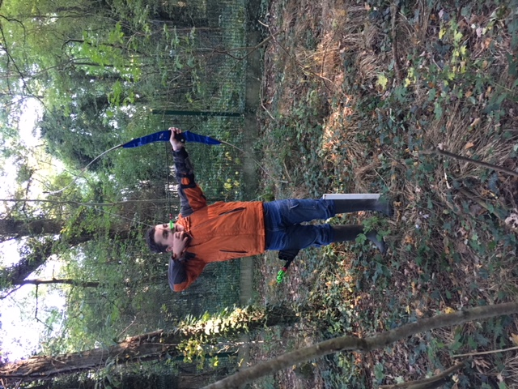
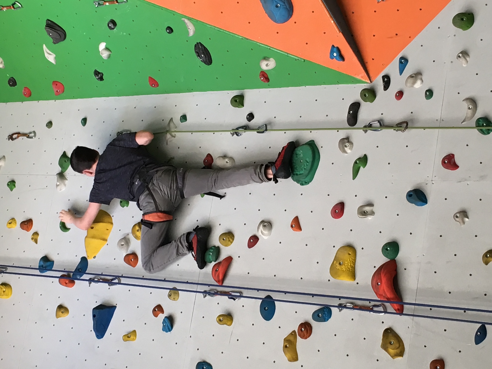
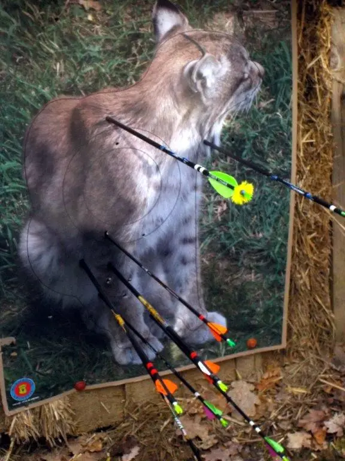

A propos de moi
Bonjour, je m'appelle Denis Menoret, j'ai 20 ans et je suis
actuellement
étudiant en BUT Informatique deuxième année.
S'il y a
une chose qui
me fascine plus que tout dans l'informatique c'est comment
les petites
fonctions programmées séparément dans un seul but peuvent
être assemblées
de façon à ce que l'on obtienne un système aux
fonctionnalités multiples.
Je possède quelques hobbys en dehors du numérique, je ne
parle
pas des mangas et des jeux vidéos auquel je touche
régulièrement
mais à l'escalade et au tir-à-l'arc que je pratiquais
régulièrement,
jusqu'à l'année dernière. je le pratiquais en famille mais
j'ai dû arréter pour me concentrer sur mes étude,
bien que j'espère encore pouvoir m'y consacrer à nouveau
quand j'aurais fini mes études. J'ai
aussi l'habitude de faire des petites promenades dans les
bois aux
environs de mon domicile pour y promener le chien de mes
parents, j'essaye
de varier le plus possible mes itinéraires.
Je suis également curieux et j'essaie tout le temps d'en
apprendre
plus, quand je travaille sur quelque chose, j'essaie souvent
de repenser
les choses d'une autre manière afin de pouvoir rectifier
certaines
erreurs, bien que j'éprouve des difficultés à me voir plus
objectivement
et à exprimer mes émotions, mais quand je sais ce que je
dois faire et
comment le faire, je sais m'appliquer dans mon travail.
J'ai également participé à de nombreux voyages durant mon enfance, j'ai visité de nombreux pays dont principalement:
- Le Japon
- L'Angleterre
- L'Italie
- L'Espagne
- L'Euro Space center en Belgique
- L'Île de ténériffe
- L'Île Maurice
Ces voyages ont agrandi mon envie de découvrir d'autres cultures et ma connaissance de certaines langues.


